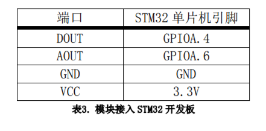
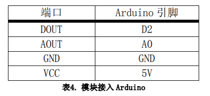
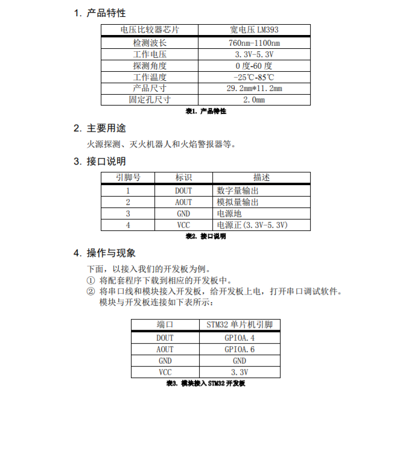

火焰传感器

目录
简介
火焰传感器是机器人专门用来搜寻火源的传感器，当然火焰传感器也可以用来检测光线的亮度，只是本传感器对火焰特别灵敏。火焰传感器利用红外线对火焰非常敏感的特点，使用特制的红外线接受管来检测火焰。
性能描述
电压比较器芯片： 宽电压LM393
检测波长： 760nm-1100nm
工作电压： 3.3V-5.3V
探测角度： 0度-60度
工作温度： -25℃-85℃
产品尺寸： 29.2mm*11.2mm
固定孔尺寸： 2.0mm
工作原理
所有的燃料燃烧都辐射一定量的紫外线和大量的红外线，且光谱范围涉及红外线、可见光及紫外线。因此，整个光谱范围都可以用来检测火焰的“有”或“无”。
硫化铅(PbS)感测器，这是一种硫化铅光敏电阻，其特点是对红外线辐射特别敏感。燃料在燃烧时，由化学反应产生闪烁的红外线辐射，使硫化铅光敏电阻感应，转变成电信号，再经放大器处理后，输出4－20mA 或 0－10V 的模拟量。在光谱中，红外线的波长为600nm 以上，而这种硫化铅感测器的光谱灵敏度为600nm－3000nm，对绝大部分红外线辐射都可以有效采集，同时还涵盖了部分可见光中的红光，这样充分保证采集到火焰信号的真实性。
电路图或接线图
电路图

stm32接线图


arduino接线图


基本驱动代码
/* Includes ------------------------------------------------------------------*/
#include "stm32f10x.h"
#include "systick.h"
#include <stdio.h>
#include "usart.h"
/* Private define ------------------------------------------------------------*/
#define ADC1_DR_Address ((u32)0x4001244C)
/* Private function prototypes -----------------------------------------------*/
void USART_Configuration(void);
void ADC_Configuration(void);
/* Private variables ---------------------------------------------------------*/
float AD_value;
vu16 ADC_ConvertedValue;
void user_gpio_init(void)
{
GPIO_InitTypeDef GPIO_InitStructure;
RCC_APB2PeriphClockCmd(RCC_APB2Periph_GPIOA,ENABLE);
GPIO_InitStructure.GPIO_Pin=GPIO_Pin_4;
GPIO_InitStructure.GPIO_Mode=GPIO_Mode_IPU;
GPIO_Init(GPIOA,&GPIO_InitStructure);
}
/*******************************************************************************
* Function Name : main
* Description : Main program
* Input : None
* Output : None
* Return : None
* Attention : None
*******************************************************************************/
int main(void)
{
Delay_Init();
usart_Configuration();
ADC_Configuration();
user_gpio_init();
printf("\r\n****************************************************************\r\n");
/* Infinite loop */
while (1)
{
if(GPIO_ReadInputDataBit(GPIOA,GPIO_Pin_4))
printf("The Flame is far!\r\n");
else
printf("The Flame is near!\r\n");
/* Printf message with AD value to serial port every 1 second */
AD_value = ADC_ConvertedValue;
AD_value = (AD_value/4096)*3.3;
printf("The current Flame AD value = %4.2fV \r\n", AD_value);
Delay(100); /* delay 1000ms */
}
}
/*******************************************************************************
* Function Name : ADC_Configuration
* Description : Configure the ADC.
* Input : None
* Output : None
* Return : None
* Attention : None
*******************************************************************************/
void ADC_Configuration(void)
{
ADC_InitTypeDef ADC_InitStructure;
DMA_InitTypeDef DMA_InitStructure;
GPIO_InitTypeDef GPIO_InitStructure;
RCC_AHBPeriphClockCmd(RCC_AHBPeriph_DMA1, ENABLE);
RCC_APB2PeriphClockCmd(RCC_APB2Periph_ADC1 | RCC_APB2Periph_GPIOA | RCC_APB2Periph_AFIO, ENABLE);
/* Configure PA.06 (ADC Channel6), PA.07 (ADC Channel7) as analog input -------------------------*/
GPIO_InitStructure.GPIO_Pin = GPIO_Pin_6 | GPIO_Pin_7;
GPIO_InitStructure.GPIO_Speed = GPIO_Speed_50MHz;
GPIO_InitStructure.GPIO_Mode = GPIO_Mode_AIN;
GPIO_Init(GPIOA, &GPIO_InitStructure);
/* DMA channel1 configuration ----------------------------------------------*/
DMA_DeInit(DMA1_Channel1);
DMA_InitStructure.DMA_PeripheralBaseAddr = ADC1_DR_Address;
DMA_InitStructure.DMA_MemoryBaseAddr = (u32)&ADC_ConvertedValue;
DMA_InitStructure.DMA_DIR = DMA_DIR_PeripheralSRC;
DMA_InitStructure.DMA_BufferSize = 1;
DMA_InitStructure.DMA_PeripheralInc = DMA_PeripheralInc_Disable;
DMA_InitStructure.DMA_MemoryInc = DMA_MemoryInc_Disable;
DMA_InitStructure.DMA_PeripheralDataSize = DMA_PeripheralDataSize_HalfWord;
DMA_InitStructure.DMA_MemoryDataSize = DMA_MemoryDataSize_HalfWord;
DMA_InitStructure.DMA_Mode = DMA_Mode_Circular;
DMA_InitStructure.DMA_Priority = DMA_Priority_High;
DMA_InitStructure.DMA_M2M = DMA_M2M_Disable;
DMA_Init(DMA1_Channel1, &DMA_InitStructure);
/* Enable DMA1 channel1 */
DMA_Cmd(DMA1_Channel1, ENABLE);
/* ADC1 configuration ------------------------------------------------------*/
ADC_InitStructure.ADC_Mode = ADC_Mode_Independent;
ADC_InitStructure.ADC_ScanConvMode = ENABLE;
ADC_InitStructure.ADC_ContinuousConvMode = ENABLE;
ADC_InitStructure.ADC_ExternalTrigConv = ADC_ExternalTrigConv_None;
ADC_InitStructure.ADC_DataAlign = ADC_DataAlign_Right;
ADC_InitStructure.ADC_NbrOfChannel = 1;
ADC_Init(ADC1, &ADC_InitStructure);
/* ADC1 regular channel6 configuration */
ADC_RegularChannelConfig(ADC1, ADC_Channel_6, 1, ADC_SampleTime_239Cycles5);
/* Enable ADC1 DMA */
ADC_DMACmd(ADC1, ENABLE);
/* Enable ADC1 */
ADC_Cmd(ADC1, ENABLE);
/* Enable ADC1 reset calibaration register */
ADC_ResetCalibration(ADC1);
/* Check the end of ADC1 reset calibration register */
while(ADC_GetResetCalibrationStatus(ADC1));
/* Start ADC1 calibaration */
ADC_StartCalibration(ADC1);
/* Check the end of ADC1 calibration */
while(ADC_GetCalibrationStatus(ADC1));
/* Start ADC1 Software Conversion */
ADC_SoftwareStartConvCmd(ADC1, ENABLE);
}
#ifdef USE_FULL_ASSERT
/**
* @brief Reports the name of the source file and the source line number
* where the assert_param error has occurred.
* @param file: pointer to the source file name
* @param line: assert_param error line source number
* @retval None
*/
void assert_failed(uint8_t* file, uint32_t line)
{
/* User can add his own implementation to report the file name and line number,
ex: printf("Wrong parameters value: file %s on line %d\r\n", file, line) */
/* Infinite loop */
while (1)
{
}
}
#endif
产品手册


作者
张杉杉